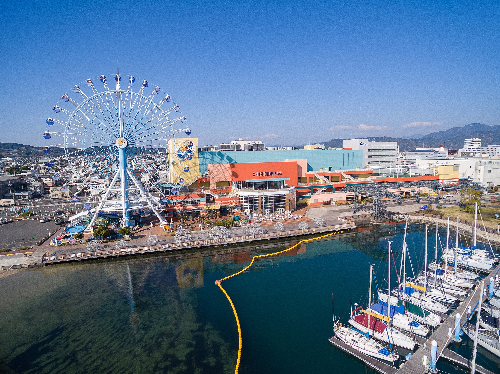
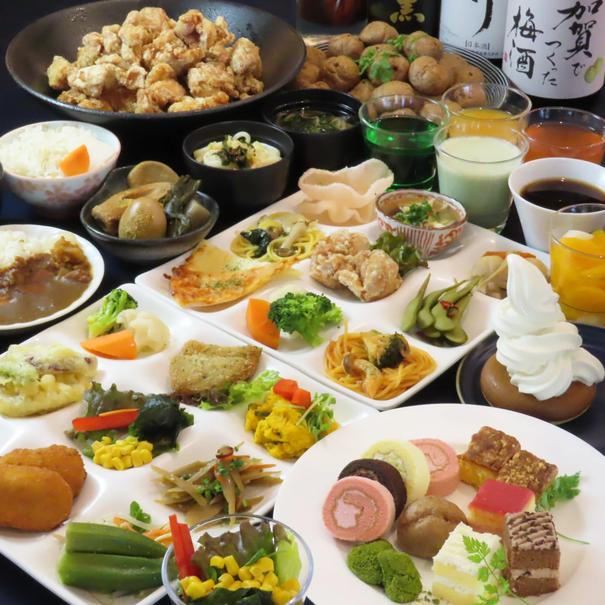
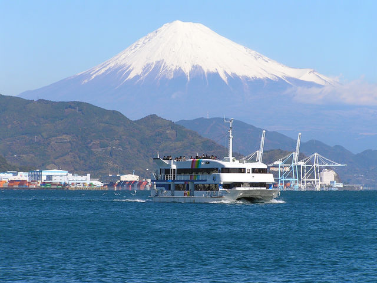

08:45 - 09:00
学校前 集合・出発

朝8:45に学校前へバスが到着します。9:00に元気よく出発します！車内では友達と話を楽しみながら、清水へ向けてワクワクする旅のスタートです。
美しい海、おいしいグルメ、そして富士山の絶景を楽しむ一日
朝8:45に学校前へバスが到着します。9:00に元気よく出発します！車内では友達と話を楽しみながら、清水へ向けてワクワクする旅のスタートです。
豊川ICから新東名高速道路へ入ります。途中のパーキングエリアで1回休憩をとりながら、11:00に清水ICへ到着します。

海沿いに広がる複合商業施設に到着！人気アニメ「ちびまる子ちゃんランド」や観覧車、多彩なショップが並びます。静岡限定のお土産やおいしいお菓子をチェックしてみましょう。
Google Maps で場所を確認
待ちに待ったランチタイム！静岡の新鮮な地場野菜や海の幸を、大人気のビュッフェスタイルで味わえます。ハーバービューを眺めながら、おいしい料理をお腹いっぱい楽しめます。
Google Maps で場所を確認
旅のメインイベント！13:00に船へ乗り込み、約40分間のクルーズを満喫します。広々としたデッキに立てば心地よい潮風を感じられ、天気の良い日には海の上から雄大な富士山の絶景が望めます。
Google Maps で乗り場を確認